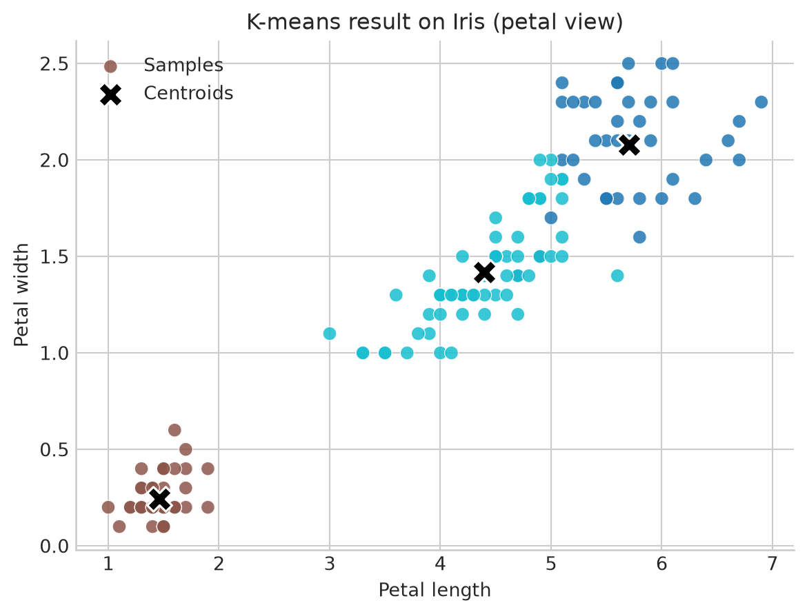
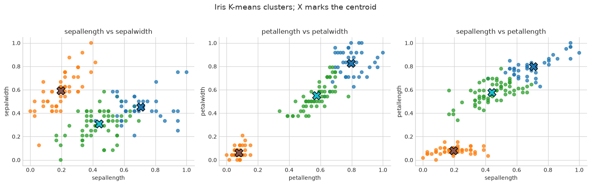
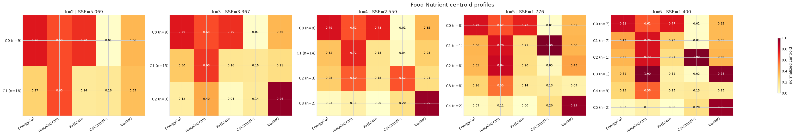
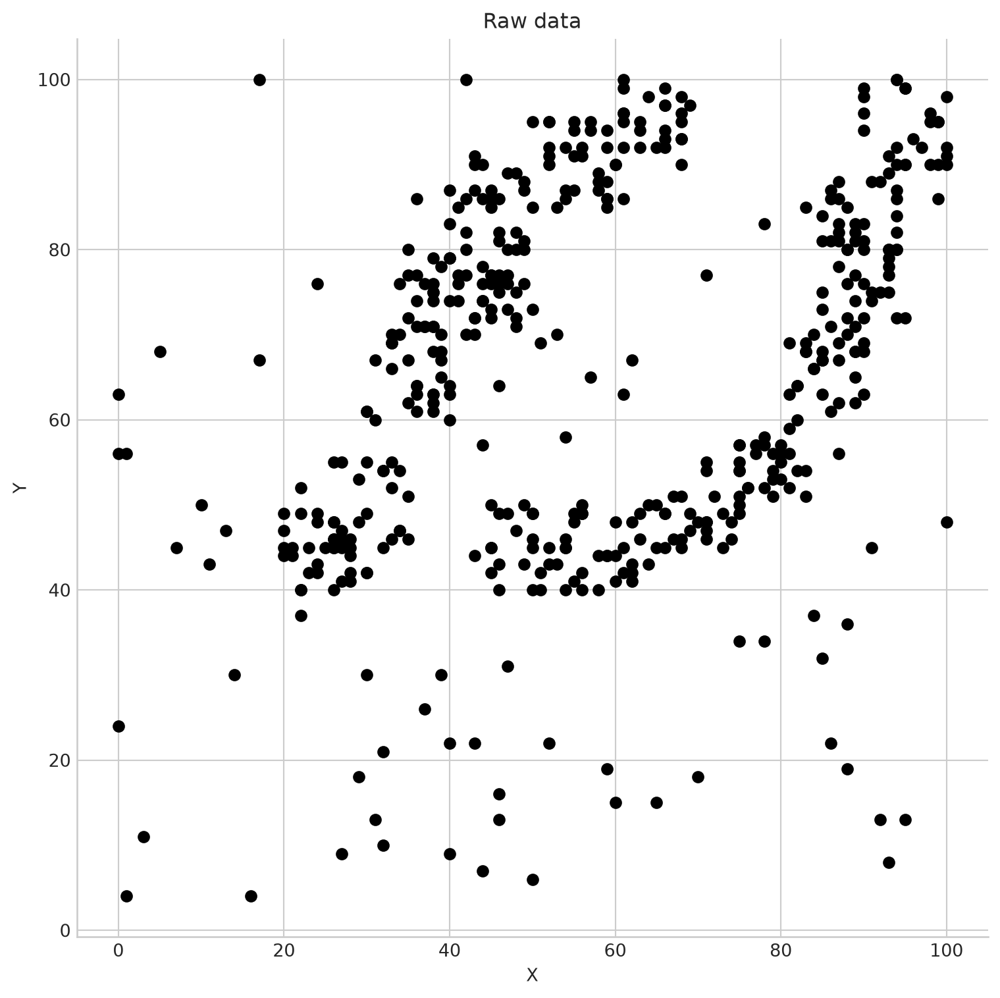
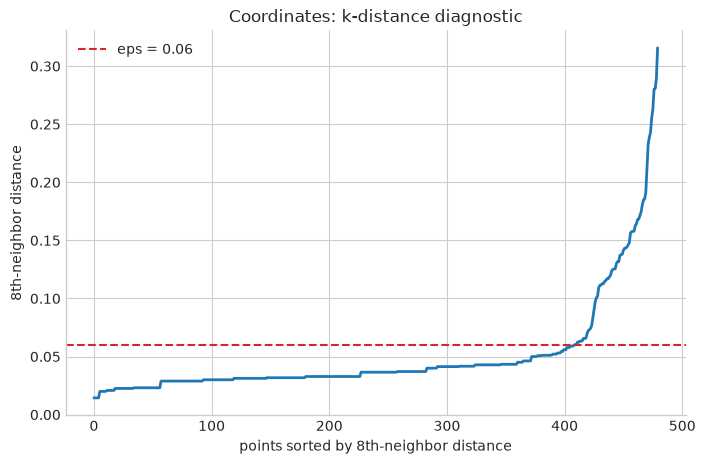
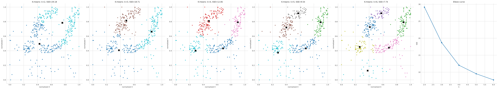

<class 'pandas.DataFrame'>
RangeIndex: 150 entries, 0 to 149
Data columns (total 5 columns):
# Column Non-Null Count Dtype
--- ------ -------------- -----
0 sepallength 150 non-null float64
1 sepalwidth 150 non-null float64
2 petallength 150 non-null float64
3 petalwidth 150 non-null float64
4 class 150 non-null str
dtypes: float64(4), str(1)
memory usage: 6.0 KBData Mining and Machine Learning (Module I)
Clustering
Matteo Francia
DISI — University of Bologna
m.francia@unibo.it
DISI — University of Bologna
m.francia@unibo.it

We will:
- normalize numeric attributes before Euclidean-distance clustering;
- inspect K-means centroids, per-cluster dispersion, sizes, iterations, and SSE;
- evaluate Iris clusters against the known species without using the species during training;
- interpret Food Nutrient partitions for increasing values of \(k\);
- compare K-means and DBSCAN on the elongated clusters in Coordinates.
The Iris dataset
Iris contains 150 plants, four numeric measurements, and no missing values. As in the Weka exercise, class is excluded from the distance computation and used only after clustering for external evaluation.
Iris schema
Iris summary
| count | unique | top | freq | mean | std | min | 25% | 50% | 75% | max | |
|---|---|---|---|---|---|---|---|---|---|---|---|
| sepallength | 150.0 | NaN | NaN | NaN | 5.843333 | 0.828066 | 4.3 | 5.1 | 5.8 | 6.4 | 7.9 |
| sepalwidth | 150.0 | NaN | NaN | NaN | 3.054 | 0.433594 | 2.0 | 2.8 | 3.0 | 3.3 | 4.4 |
| petallength | 150.0 | NaN | NaN | NaN | 3.758667 | 1.76442 | 1.0 | 1.6 | 4.35 | 5.1 | 6.9 |
| petalwidth | 150.0 | NaN | NaN | NaN | 1.198667 | 0.763161 | 0.1 | 0.3 | 1.3 | 1.8 | 2.5 |
| class | 150 | 3 | Iris-setosa | 50 | NaN | NaN | NaN | NaN | NaN | NaN | NaN |
Preprocessing: normalize before Euclidean distance
Distance-based algorithms are sensitive to scale.
Code
| sepallength | sepalwidth | petallength | petalwidth | |
|---|---|---|---|---|
| min | 0.0 | 0.0 | 0.0 | 0.0 |
| max | 1.0 | 1.0 | 1.0 | 1.0 |
Simple K-means
n_init=10 deliberately tries several initializations and retains the lowest-SSE result. Fixing random_state makes this notebook reproducible.
Code
iris_kmeans = KMeans(n_clusters=3, n_init=10, max_iter=500, random_state=10)
iris_clusters = iris_kmeans.fit_predict(X_iris_scaled)
iris_centers, iris_stds, iris_sizes = cluster_summary(
X_iris_scaled, iris_clusters, iris_kmeans.cluster_centers_, iris_features
)
print(f"Iterations to convergence: {iris_kmeans.n_iter_}")
print(f"SSE / inertia: {iris_kmeans.inertia_:.4f}")Iterations to convergence: 7
SSE / inertia: 6.9981Simple K-means
Code
fig, ax = plt.subplots(figsize=(7, 5))
scatter = ax.scatter(iris["petallength"], iris["petalwidth"], c=iris_clusters, cmap="tab10", s=55, alpha=0.85, edgecolor="white", linewidth=0.5, label="Samples",)
centers_original = iris_scaler.inverse_transform(iris_kmeans.cluster_centers_)
ax.scatter(centers_original[:, 2], centers_original[:, 3], c="black", marker="X", s=180, linewidth=1.2, edgecolor="white", label="Centroids",)
ax.set_title("K-means result on Iris (petal view)")
ax.set_xlabel("Petal length")
ax.set_ylabel("Petal width")
ax.legend(loc="best")
plt.show()
Iris cluster sizes
Iris centroids
Iris within-cluster standard deviations
Classes-to-clusters evaluation
Cluster IDs have no semantic order. We therefore find the one-to-one mapping from clusters to Iris species that maximizes the diagonal of the contingency table. This is the Python equivalent of Weka’s class-to-cluster correspondence.
Iris cluster-to-class matching
Iris matched-class confusion matrix
Code
print("Cluster-to-class mapping:", {f"C{k}": v for k, v in iris_mapping.items()})
print(f"Correctly matched: {iris_accuracy:.1%}")
print(f"Incorrectly matched: {1 - iris_accuracy:.1%} ({np.sum(iris_predicted_class != y_iris)} plants)")
cm = pd.DataFrame(
confusion_matrix(y_iris, iris_predicted_class, labels=np.unique(y_iris)),
index=[f"true: {c}" for c in np.unique(y_iris)],
columns=[f"pred: {c}" for c in np.unique(y_iris)],
)
cmCluster-to-class mapping: {'C0': 'Iris-virginica', 'C1': 'Iris-setosa', 'C2': 'Iris-versicolor'}
Correctly matched: 88.7%
Incorrectly matched: 11.3% (17 plants)| pred: Iris-setosa | pred: Iris-versicolor | pred: Iris-virginica | |
|---|---|---|---|
| true: Iris-setosa | 50 | 0 | 0 |
| true: Iris-versicolor | 0 | 47 | 3 |
| true: Iris-virginica | 0 | 14 | 36 |
Visual analysis across pairs of attributes
Setosa should appear well separated. Versicolor and virginica overlap most strongly on sepal length and sepal width, while the petal measurements provide clearer separation.

Improve the result by removing weak attributes
The handout suggests excluding poorly informative attributes. We repeat K-means using only petal length and petal width, then evaluate against the hidden species labels.
Code
petal_features = ["petallength", "petalwidth"]
X_petal = MinMaxScaler().fit_transform(iris[petal_features])
petal_model = KMeans(n_clusters=3, n_init=10, random_state=10)
petal_clusters = petal_model.fit_predict(X_petal)
petal_table, petal_mapping, petal_predicted, petal_accuracy = best_cluster_class_mapping(y_iris, petal_clusters)
comparison = pd.DataFrame({
"features": ["all four", "petal only"],
"SSE": [iris_kmeans.inertia_, petal_model.inertia_],
"class-match accuracy": [iris_accuracy, petal_accuracy],
})
comparison_table = comparison.copy()
comparison_table["SSE"] = comparison_table["SSE"].map(lambda value: f"{value:.4f}")
comparison_table["class-match accuracy"] = comparison_table["class-match accuracy"].map(lambda value: f"{value:.1%}")
comparison_table| features | SSE | class-match accuracy | |
|---|---|---|---|
| 0 | all four | 6.9981 | 88.7% |
| 1 | petal only | 1.7051 | 96.0% |
Suggested answer
- Petal measurements preserve the strong Setosa separation and usually improve the external class match.
- Do not compare the two SSE values directly: they live in spaces with different dimensionality.
The Food Nutrient dataset
The file contains nutritional values per 100 g. Following the handout, we normalize the five numeric attributes and fit K-means for \(k=2,3,4,5,6\).
The cluster numbers below are canonicalized by sorting centroids from high to low energy. This makes tables easier to compare across runs; cluster IDs themselves have no inherent meaning and need not equal Weka’s IDs.
Food sample
Food summary
| EnergyCal | ProteinGram | FatGram | CalciumMG | IronMG | |
|---|---|---|---|---|---|
| count | 27.00 | 27.00 | 27.00 | 27.00 | 27.00 |
| mean | 207.41 | 19.00 | 13.48 | 43.96 | 2.38 |
| std | 101.21 | 4.25 | 11.26 | 78.03 | 1.46 |
| min | 45.00 | 7.00 | 1.00 | 5.00 | 0.50 |
| 25% | 135.00 | 16.50 | 5.00 | 9.00 | 1.35 |
| 50% | 180.00 | 19.00 | 9.00 | 9.00 | 2.50 |
| 75% | 282.50 | 22.00 | 22.50 | 31.50 | 2.60 |
| max | 420.00 | 26.00 | 39.00 | 367.00 | 6.00 |
Centroid profiles across cluster counts
The heatmaps use normalized centroid values: darker cells mean a larger value relative to the observed range of that nutrient.
Code
fig, axes = plt.subplots(1, 5, figsize=(44, 5))
for ax, k in zip(axes.flat, range(2, 7)):
_, _, centers, _, _, sizes = food_results[k]
image = ax.imshow(centers, cmap="YlOrRd", vmin=0, vmax=1, aspect="auto")
ax.set_xticks(range(len(food_features)), food_features, rotation=35, ha="right")
ax.set_yticks(range(k), [f"C{i} (n={sizes.iloc[i]})" for i in range(k)])
ax.set_title(f"k={k} | SSE={food_results[k][0].inertia_:.3f}")
for i in range(k):
for j in range(len(food_features)):
value = centers.iloc[i, j]
ax.text(j, i, f"{value:.2f}", ha="center", va="center", color="white" if value > .55 else "black", fontsize=8)
fig.colorbar(image, ax=axes.ravel().tolist(), shrink=.55, label="normalized centroid")
fig.suptitle("Food Nutrient centroid profiles", fontsize=15)
plt.show()
Food cluster centers
SSE = 5.069| size | EnergyCal | ProteinGram | FatGram | CalciumMG | IronMG | |
|---|---|---|---|---|---|---|
| C0 | 9 | 331.1 | 19.0 | 27.6 | 8.8 | 2.5 |
| C1 | 18 | 145.6 | 19.0 | 6.4 | 61.6 | 2.3 |
SSE = 3.367| size | EnergyCal | ProteinGram | FatGram | CalciumMG | IronMG | |
|---|---|---|---|---|---|---|
| C0 | 9 | 331.1 | 19.0 | 27.6 | 8.8 | 2.5 |
| C1 | 15 | 156.3 | 19.9 | 7.3 | 62.5 | 1.7 |
| C2 | 3 | 91.7 | 14.7 | 2.3 | 56.7 | 5.8 |
SSE = 2.559| size | EnergyCal | ProteinGram | FatGram | CalciumMG | IronMG | |
|---|---|---|---|---|---|---|
| C0 | 8 | 341.9 | 18.7 | 28.9 | 8.7 | 2.4 |
| C1 | 14 | 163.9 | 20.7 | 7.7 | 19.9 | 2.0 |
| C2 | 3 | 151.7 | 18.3 | 7.7 | 227.7 | 1.7 |
| C3 | 2 | 57.5 | 9.0 | 1.0 | 78.0 | 5.7 |
Food cluster centers
SSE = 1.776| size | EnergyCal | ProteinGram | FatGram | CalciumMG | IronMG | |
|---|---|---|---|---|---|---|
| C0 | 8 | 341.9 | 18.7 | 28.9 | 8.7 | 2.4 |
| C1 | 1 | 180.0 | 22.0 | 9.0 | 367.0 | 2.5 |
| C2 | 8 | 178.1 | 22.9 | 8.8 | 21.6 | 2.8 |
| C3 | 8 | 143.1 | 17.5 | 6.5 | 52.6 | 1.0 |
| C4 | 2 | 57.5 | 9.0 | 1.0 | 78.0 | 5.7 |
SSE = 1.400| size | EnergyCal | ProteinGram | FatGram | CalciumMG | IronMG | |
|---|---|---|---|---|---|---|
| C0 | 7 | 352.9 | 18.6 | 30.1 | 8.7 | 2.4 |
| C1 | 7 | 202.9 | 22.0 | 12.0 | 10.0 | 2.4 |
| C2 | 1 | 180.0 | 22.0 | 9.0 | 367.0 | 2.5 |
| C3 | 1 | 160.0 | 26.0 | 5.0 | 14.0 | 5.9 |
| C4 | 9 | 139.4 | 18.1 | 5.9 | 57.7 | 1.2 |
| C5 | 2 | 57.5 | 9.0 | 1.0 | 78.0 | 5.7 |
Food Nutrient interpretation
Suggested answer
Across increasing \(k\), the stable, interpretable profiles are:
- high-energy, high-fat foods;
- high-protein foods with lower fat and energy;
- light but calcium-rich foods;
- a singleton extreme-calcium food when the partition isolates one observation;
- foods with middle-range energy, protein, and fat;
- a light/low-fat but protein-, calcium-, or iron-rich group at the finer partition.
Verify against the classified file
FoodNutrientsClassified.arff contains descriptive fields (SuperType, preparation, Type, and Name) followed by the same numeric nutrients. They are used only to interpret the already fitted \(k=6\) clusters.
Food clusters by super type
Food clusters by type
Food cluster members
Code
C0: BEEF_BRAISED, BEEF_ROAST, BEEF_STEAK, LAMB_SHOULDER_ROAST, SMOKED_HAM, PORK_ROAST, PORK_SIMMERED
C1: HAMBURGER, BEEF_CANNED, CHICKEN_CANNED, LAMB_LEG_ROAST, BEEF_TONGUE, VEAL_CUTLET, TUNA_CANNED
C2: SARDINES_CANNED
C3: BEEF_HEART
C4: CHICKEN_BROILED, BLUEFISH_BAKED, CRABMEAT_CANNED, HADDOCK_FRIED, MACKEREL_BROILED, MACKEREL_CANNED, PERCH_FRIED, SALMON_CANNED, SHRIMP_CANNED
C5: CLAMS_RAW, CLAMS_CANNEDThe Coordinates dataset: K-means
Coordinates contains 480 two-dimensional points. We first repeat the \(k=2\ldots6\) experiment and inspect how SSE changes. Because scikit-learn reports the sum of squared distances while the Weka slide values depend on its own normalization and reporting convention, absolute SSE values need not match; the trend and geometry are the comparison that matter.
Code
coordinates = load_arff_frame("Coordinates.arff")
coordinate_features = ["X", "Y"]
coordinate_scaler = MinMaxScaler()
X_coordinates = coordinate_scaler.fit_transform(coordinates[coordinate_features])
coordinate_models = {}
for k in range(2, 7):
model = KMeans(n_clusters=k, n_init=20, random_state=10)
labels = model.fit_predict(X_coordinates)
coordinate_models[k] = (model, labels)
coordinate_sse = pd.DataFrame({
"k": range(2, 7),
"SSE": [coordinate_models[k][0].inertia_ for k in range(2, 7)],
})
coordinate_sse["SSE reduction"] = coordinate_sse["SSE"].shift(1) - coordinate_sse["SSE"]
coordinate_sse.round(3)| k | SSE | SSE reduction | |
|---|---|---|---|
| 0 | 2 | 29.177 | NaN |
| 1 | 3 | 18.709 | 10.468 |
| 2 | 4 | 12.060 | 6.649 |
| 3 | 5 | 9.539 | 2.520 |
| 4 | 6 | 7.738 | 1.802 |
K-means
Code
fig, axes = plt.subplots(2, 3, figsize=(14, 8))
for ax, k in zip(axes.flat, range(2, 7)):
model, labels = coordinate_models[k]
ax.scatter(X_coordinates[:, 0], X_coordinates[:, 1], c=labels, cmap="tab10", s=16, alpha=.8)
ax.scatter(model.cluster_centers_[:, 0], model.cluster_centers_[:, 1], c="black", marker="X", s=120)
ax.set(title=f"K-means: k={k}, SSE={model.inertia_:.2f}", xlabel="normalized X", ylabel="normalized Y")
axes.flat[-1].plot(coordinate_sse["k"], coordinate_sse["SSE"], marker="o", linewidth=2)
axes.flat[-1].set(title="Elbow curve", xlabel="k", ylabel="SSE")
fig.suptitle("Coordinates clustered with K-means", fontsize=15)
plt.tight_layout()
plt.show()
K-means conclusion
SSE necessarily decreases as \(k\) grows, with diminishing improvements around the handout’s suggested \(k\approx5\). But the plots expose the more important limitation: K-means divides elongated natural groups into compact Voronoi regions. Adding centroids reduces SSE by slicing the shapes rather than discovering their full extent. A density-based method is preferable.
The Coordinates dataset: DBSCAN
DBSCAN replaces a chosen number of clusters with two density parameters:
eps: neighborhood radius;min_samples: minimum number of points (including the point itself) needed to define a core point.
Code
# A k-distance plot helps identify a bend for min_samples=8.
neighbors = NearestNeighbors(n_neighbors=8).fit(X_coordinates)
distances, _ = neighbors.kneighbors(X_coordinates)
k_distances = np.sort(distances[:, -1])
plt.plot(k_distances, linewidth=2)
plt.axhline(.06, color="tab:red", linestyle="--", label="eps = 0.06")
plt.xlabel("points sorted by 8th-neighbor distance")
plt.ylabel("8th-neighbor distance")
plt.title("Coordinates: k-distance diagnostic")
plt.legend()
plt.show()
DBSCAN
The handout explores (eps, minPts) values (0.10,4), (0.10,8), (0.05,4), (0.06,3), and (0.06,8) on normalized coordinates.

| eps | min_samples | clusters | noise points | noise % | silhouette (non-noise) | |
|---|---|---|---|---|---|---|
| 0 | 0.10 | 4 | 4 | 9 | 1.9% | 0.012 |
| 1 | 0.10 | 8 | 1 | 44 | 9.2% | n/a |
| 2 | 0.05 | 4 | 3 | 58 | 12.1% | 0.396 |
| 3 | 0.06 | 3 | 9 | 29 | 6.0% | -0.033 |
| 4 | 0.06 | 8 | 2 | 55 | 11.5% | 0.395 |
DBSCAN interpretation
Suggested answer
The plots reproduce the handout’s parameter reasoning:
eps=0.10, min_samples=4: neighborhoods connect too easily, so distinct dense areas merge;eps=0.10, min_samples=8: the stronger density requirement helps with noise but the radius can still bridge natural groups;eps=0.05, min_samples=4: the small radius and low threshold can fragment dense shapes;eps=0.06, min_samples=3: the density threshold is too permissive to reject noise reliably;eps=0.06, min_samples=8: best balance among the tested settings, recovering elongated clusters while rejecting sparse points.
label == -1). Its parameters are scale-dependent, which is why the same normalization used by the handout is essential.
Takeaways
- Normalize before Euclidean-distance clustering when attributes have different ranges.
- Read K-means beyond a single score: inspect centroids, dispersion, sizes, stability, and geometry.
- Known labels may evaluate a clustering, but they must not enter the clustering features.
- SSE always falls with larger \(k\); look for diminishing returns and whether clusters remain meaningful.
- K-means favors compact center-based clusters. DBSCAN is better suited to elongated shapes and explicit noise.
- Cluster IDs are arbitrary. Interpret a cluster through its profile and members, not its number.
Kaggle assignment: customer segmentation
Use the public Kaggle dataset Customer Personality Analysis to build and interpret customer segments.
Your task:
- Load the dataset and define a clear segmentation goal, such as identifying customer groups for marketing actions.
- Clean the data, handle missing values, engineer useful features such as age, total spending, family size, or campaign acceptance, and scale numeric variables before distance-based clustering.
- Compare at least two clustering approaches, for example K-means and hierarchical clustering or DBSCAN. For K-means, justify the selected number of clusters using elbow and silhouette evidence.
- Profile each cluster with tables and plots, then assign a short business label to every cluster.
- Explain one limitation of the analysis, including whether any variables could introduce bias or make the clusters hard to act on.
Submit the executed notebook plus a short conclusion with the selected method, the cluster profiles, and one concrete marketing recommendation per cluster.
Matteo Francia - Machine Learning and Data Mining (Module I) - A.Y. 2026/27